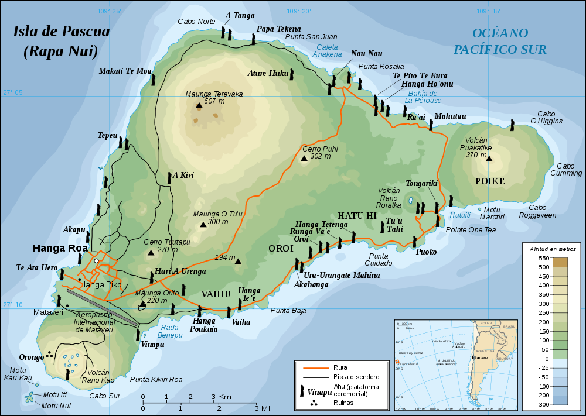
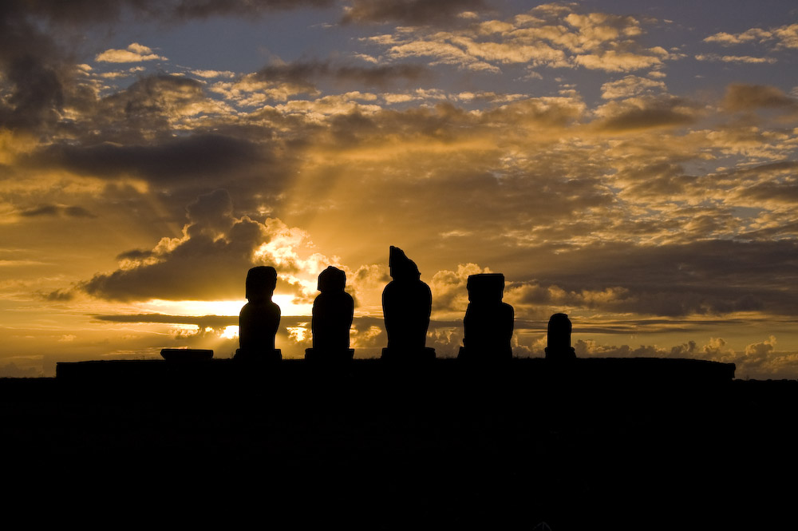

La Isla de Pascua
Isla de Pascua es una isla que hace parte de Chile ubicada en el Océano Pacífico. Es considerado un lugar patrimonio de la humanidad por la Unesco por su cultura ancestral Rapa Nui, cuyo vestigio más reconocido han sido las estatuas moai.
Nuestro programa de eventos se encuentra aqui. Estaremos ubicados en varios lugares en Hanga Roa. En particular: el Museo Antropológico P. Sebastian Englert, Ahu Tahai, y los colegios en la Isla.


Ahu Tahai en el atardecer (Foto: Benoit Giroux, 2008)